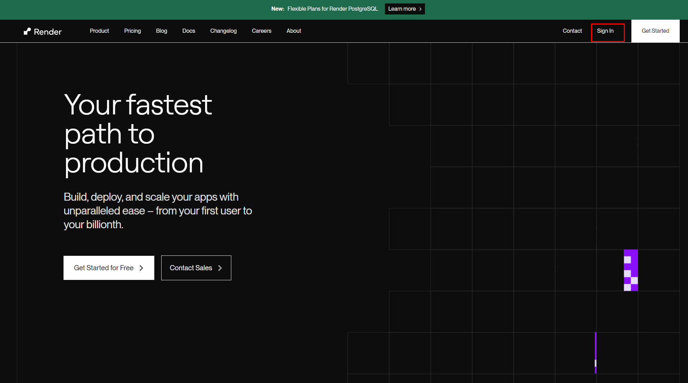

Bước 1: Đăng nhập vào tài khoản github.
Nếu bạn chưa có tài khoản github hãy tạo tài khoản git theo hướng dẫn sau.
Nếu bạn chưa có tài khoản github hãy tạo tài khoản git theo hướng dẫn sau.
Tại màn hình tiếp theo hãy nhập tên mà bạn muốn truy cập trên trình duyệt.(bỏ qua phần đuôi ví dụ bạn muốn tinhyeucuatoi.vn thì chỉ cần nhập tinhyeucuatoi)
Sau khi thành công sẽ trông như hình sau.
Bạn không cần tạo tài khoản ở trang này mà chỉ cần nhấn nút Sign In
Sau đó nhấn vào nút Sign in with GitHub như trong hình
Nhấn vào nút Authorize Render để kết nối với tài khoản github của bạn
Nhấn vào nút Create Account
Đến bước này bạn đi đến bước tiếp theo. Nếu chờ 5 phút không có email tới bạn click vào nút trong hình.
Truy cập hộp thư đến và tìm email được gửi từ render sau đó click vào link trong hình
Đến bước này bạn đã tạo xong tài khoản render. Hãy nhấn vào nút như trong hình.
Chọn Github như trong hình.
Chọn repository và install như hình

Chọn repository và connect như hình
Tiến hành config và deploy như hình(Nhớ nhìn kỹ và làm theo hình 2 chỗ bôi đỏ)
Sau khi bấm nút Deploy Static Site thì sẽ sang màn hình sau. Chờ một lúc và xem kết quả.
Truy cập Tình Yêu Mang Theo để xem kết quả.
Chúc mừng bạn đã tạo xong trang web tỏ tình. Hãy chia sẻ với crush của bạn ngay thôi.
Chúc bạn thành công.